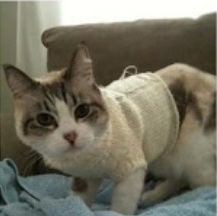

Pachi was adopted from an animal shelter and
now resides in Seattle,WA, where she runs a
small but successful web page design business exclusively for cat clients.

Profile
Favorite food - smoked salmon
hobbies - watcing fishing on ESPN,
snaking on garden flowers, monitoring the apartment parking lot